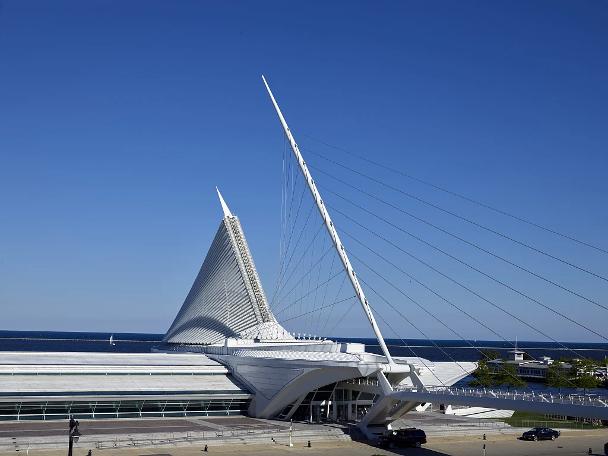

LIENZO / Diseño de interacción
Prototipo de pantalla móvil
Prueba un recorrido móvil desde la pantalla de bloqueo hasta una app. Cambia las capturas y configura zonas táctiles para que tu propio diseño se pueda recorrer.
04 pantallasHTML · CSS · JS
Prototipo interactivo
Bloqueo


09:41
Martes 17 de noviembre
Guía de visita
Museo de arte
Recorre el Pabellón Quadracci del Museo de Arte de Milwaukee.
01 · Milwaukee
Pabellón Quadracci

Los ventanales del atrio abren la vista al lago Michigan.
02 · Guía de visita
Visita completada
Terminaste el recorrido de muestra.
Cómo llevarlo a tu proyecto
Descomprime el ZIP y abre index.html. Personaliza la demo y descarga el HTML editado. Conserva los estilos, scripts, fuentes y avisos junto a él. Los cambios y favoritos de la demo se reinician al recargar.